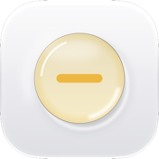

Minimizing should be cool.
Genie and Scale have been the only options since 2001. MacMin turns your windows to liquid glass and pours them into the Dock. Press ⌘M or the yellow button like you always do.
- Free download
- Liquid Glass, Liquid Metal and Snow, free forever
- All eleven for $5, once
- No subscription
For macOS 14 Sonoma or later · Apple silicon and Intel (will it run on mine?)
Two options. Since 2001.
A brief and slightly sad history. Mac OS X shipped with Genie and Scale the same year as the first iPod. Since then Apple has redesigned everything at least twice. Minimize animations? Not so much.
- 2001CheetahGenie and Scale debut. Honestly? Mind-blowing. In 2001.
- 2003–2024Panther to SequoiaExposé, Spaces, Dark Mode, Stage Manager, window tiling. Minimizing? Same two ways.
- 2025TahoeLiquid Glass, everywhere. Hit minimize and… it’s the Genie.
- NowMacMinEleven new ones. Glass, chrome, fire, snow, black holes.
Twenty-five years, two animations. Bring minimize animations into the… present?
Liquid Glass Free
Turns to glass and pours itself into the Dock. Fancy. Frost it up, or bend the light more.
Each one plays when a window heads to the Dock, and backwards when it comes home. Swap any time from the menu bar. Commitment is not required. Liquid Glass, Liquid Metal and Snow come free; Pro unlocks the other eight for $5, once.
Nothing new to learn. Just better exits.
- Minimize like always
- ⌘M, the yellow button, double-clicking the title bar, Window › Minimize. MacMin catches them all.
- Tint to icon colour
- Windows can take on their app’s colour on the way out. Safari leaves blue, Notes leaves yellow. Cute.
- Make each one yours
- Every effect has a setting or two. Frost the glass, pick a metal, colour the blobs or the flames (rainbow is an option), choose which way the snow blows, or give DuoFold a cracked screen.
- Your speed
- Slow and dramatic, or twice as fast. Hover over any effect in the menu to preview it before you pick.
- Window switchers too
- Bringing windows back from apps like AltTab or DockDoor plays the effect in reverse. There might be conflicts with other apps. Reach out if you find one.
- Basically weightless
- Drawn on your Mac’s graphics chip with Metal. It only does anything during the second a window is moving.
- Feeling nostalgic?
- Flip MacMin off from the menu and the Genie comes right back. No hard feelings.
Your Mac, your windows, your business.
MacMin asks for two permissions with very dramatic names. Here’s what actually happens, with nothing left out.
Accessibility
First, so MacMin can notice when you press minimize.
macOS bundles “can see keyboard shortcuts and window buttons” into one big permission. MacMin only looks for minimize and restore. It never keeps or records what you type, and never writes down window titles.
Screen Recording
Then, so it can take a picture of the window you’re minimizing.
Despite the name, nothing is recorded. It grabs one still of one window at the moment you minimize it, animates it, then lets it go. No video, no audio, nothing of the rest of your screen.
Then it plays the effect. The window goes to the Dock as usual. Bring it back and the effect runs backwards.
The short version
- Works offline. The only thing MacMin ever downloads is one tiny file from this website, once a day, to see if there’s an update. You can turn that off in the menu.
- No tracking in the app. No analytics, ads or accounts. Window pictures stay in memory and vanish when the window comes back. The only thing it writes down is a small log on your Mac, for fixing bugs, with no window titles and nothing you type. I just want your windows to look cool.
- Checked by Apple. MacMin is signed with a Developer ID and notarized, so Apple’s automated malware check has looked at it before you ever see it.
- Easy to remove. Quit it from the menu and drag it to the Trash. Its two permission switches can go too (how).
For the careful: check your download is the real one
Every release has a fingerprint (a SHA-256 hash). If yours matches the one here, the file is exactly what I built. Open Terminal and paste:
shasum -a 256 ~/Downloads/MacMin-1.0.dmgIt should print:
If your Mac runs macOS Sonoma, it runs MacMin.
That’s macOS 14 or anything newer. Not sure what you have? Apple menu › About This Mac.
Any Mac with Apple silicon Smooth
M1, M2, M3, M4, M5 and newer. Every MacBook Air, MacBook Pro, iMac, Mac mini, Mac Studio and Mac Pro from late 2020 on.
Intel Macs from 2018 on Works well
Everything works. Smaller Intel Macs have lighter graphics, so Television, Shatter, Dissolve and DuoFold look smoothest there.
Which Intel models?
- MacBook Air 2018–2020
- MacBook Pro 2018–2020
- Mac mini 2018
- iMac 2019–2020, iMac Pro 2017
- Mac Pro 2019
Macs from 2017 and earlier Can’t install
These can’t run macOS Sonoma, and MacMin needs the screen tools it brought. The 2017 iMac Pro is the one exception: it’s supported.
One download works on both Apple silicon and Intel, from macOS 14 Sonoma to macOS 27.
- Download free
- Open the download
- Drag to Applications
- Flip two switches
- Minimize anything

MacMin
Free
Liquid Glass, Liquid Metal and Snow, with every setting. No trial, no timer, no nagging. Yours to keep.
Version 1.0 · macOS 14 or later
MacMin Pro
$5 CAD, or USD in the US · once
Unlocks the other eight: Blobs, Shatter, DuoFold, Black Hole, Dissolve, Television, Burn and Smoke. Same app, nothing new to install.
- Pay once, no subscription
- Every Mac you own
- Every future effect too
Start free. If the glass makes you smile and you want fire, smoke and black holes too, Pro is less than a coffee and cheaper than 25 more years of Genie.
On your phone? MacMin installs on a Mac, so open this page there to download. You can buy Pro from anywhere.
Questions about Pro? Email macmin@studiographic.ca.
Up and running in about a minute
-
1Open the download
Double-click MacMin-1.0.dmg in your Downloads. Same download for free and Pro.
-
2Drag it to Applications
Then open it from there. The first time, macOS asks if you’re sure about an app from the internet. Click Open.
-
3Flip two switches
Accessibility lets it notice you pressed minimize. Screen Recording lets it grab one still of that window. What these do. Missed the prompt? The MacMin menu points the way.
-
4Minimize anything
Press ⌘M and watch it pour into the Dock. Liquid Glass is on from the start, free.
Good to know
Free and Pro
What’s free?
MacMin itself, Liquid Glass, Liquid Metal and Snow, and every setting they have. Forever. No trial, no ads, no “upgrade now” pop-ups every time you minimize.
What does Pro get me?
The other eight effects: Blobs, Shatter, DuoFold, Black Hole, Dissolve, Television, Burn and Smoke, plus any new ones I add later. $5, once.
Is Pro a subscription?
Nope, never. You pay $5 once and it’s yours, including every update that ever comes out. No renewals, no “your trial has ended.”
Can I put it on my other Macs?
Yes! The free version goes on as many Macs as you like, and one Pro purchase covers every Mac you own.
Why isn’t it on the Mac App Store?
App Store apps aren’t allowed to notice when you press minimize in other apps, which is kind of the whole point of MacMin. So it lives here instead, signed and notarized with Apple the same way.
How do I get updates?
They’re free for everyone, forever. MacMin checks this website once a day and tells you when there’s a new version. You can also check right away with the refresh button next to Check for Updates in the menu, or turn automatic checks off.
To install one, download the newest version from this page, quit MacMin, drag the new one into Applications and replace the old one. Pro stays unlocked.
Permissions
macOS asked me to allow Screen Recording again. Why?
Since macOS 15 Sequoia, macOS every so often asks you to re-confirm any app that can take pictures of the screen, not just MacMin. The wording is alarming, but it’s routine. Click Allow and carry on.
It stopped working after an update.
macOS sometimes forgets a permission when an app changes. Open System Settings › Privacy & Security › Accessibility, switch MacMin off and on again, and you’re back in business.
How do I uninstall it?
Quit MacMin from its menu and drag it from Applications to the Trash. If you want to tidy up, remove it from System Settings › Privacy & Security › Accessibility and Screen Recording too. I’ll miss you.
Everything else
Wait, Apple really never added any others?
Officially, nope. Genie and Scale, since Mac OS X 10.0 in 2001. There’s a secret third one called “Suck” you can unlock with a Terminal command, but it’s been hiding in there for a reason.
Will it slow my Mac down?
No. MacMin sits quietly until you minimize something, uses your graphics chip for about a second, then goes back to napping.
An effect looks a bit choppy.
Very large or high-resolution displays make every effect work harder, especially on older Intel Macs. Blobs, Burn, Smoke and the two liquid effects do the most work. Try a lighter one like Television, Shatter or Dissolve, or nudge the Speed slider up so it finishes sooner.
Does “Minimize all” (⌥⌘M) get the effect?
Not yet. Minimizing every window at once is still left to macOS (and the Genie).
Something’s not right. Who do I talk to?
Me! Email macmin@studiographic.ca and tell me what happened and which effect you were using. Attaching its log helps a lot: in Finder, choose Go › Go to Folder, paste ~/Library/Logs and send me MacMin.log.
Twenty-five years was long enough.
Free to download. All eleven for $5, once, on every Mac you own.